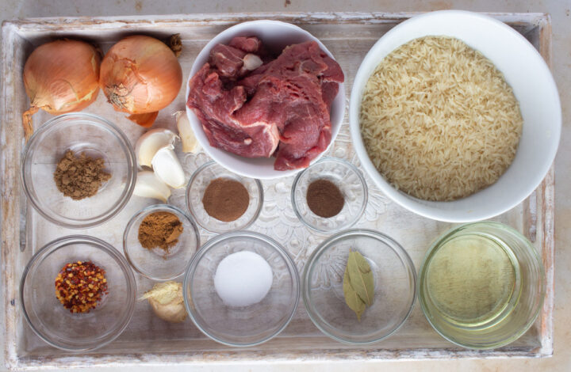

Rice pilau is a fragrant tasty one-pot dish made with caramelized beef with rice and potato cooked in a rich and delicious meat or chicken broth.
It is considered a special rice dish that is often served at weddings, during festive seasons or when an important guests arrive.
Pilau has a wonderful balance of flavors. It is a festive dish, which is never missing during special occasions or events. It’s made with rice cooked in a well-seasoned broth of Meat or chicken. Unlike the Indian pilau, the East African version does not use curry and it’s less spicy.
Rice is, without a doubt, one of my favorite food in the world. Not only is it my to-go dish when I need to prepare a quick meal, but it can easily be turned into an elegant dish for special occasions.

Ingredients
2 cups of basmat rice
5 potatoes medium size [peeled and cut into quarters]
vegetable oil
2 Red onions medium size [thinly sliced]
4 cloves garlic minced
4 cloves garlic minced
2 tablespoons ginger minced
1 serrano chile finely chopped
1 tablespoon pilau masala
2 beef stock cubes
¼ cup fresh cilantro roughly chopped
1 lb beef sirloin cubed
3 Roma tomatoes diced
4 cups water
2 Bay leaves
Salt to taste
Steps
Heat a stockpot on medium-high heat. Add oil and heat until hot but not smoking.
Add the sliced onions and fry for 10-15 minutes or till the onions starts to turn golden brown (be careful not to burn it).
Add the garlic, ginger, serrano pepper, Cook for 1-2 minutes, until fragrant.
Add the cubed beef, pilau masala, beef stock cubes, bay leaves, cilantro, and salt to taste. Cook until the meat browns and caramelizes stirring occasionally about 8 to 10 minutes.
Add the diced tomatoes and cook for 4-5 minutes, until the tomatoes have released their liquid.
Stir in the potatoes and the water. Bring to a boil and cook for 10 minutes.
Stir in the rice, and cover tightly with a foil paper (to keep the steam in) if necessary. Reduce the heat to low and cook for 20 minutes, until the rice is cooked and the liquid is absorbed.
Once the rice is dry, remove the foil paper and fluff with a fork to ensure the seasonings are well distributed all around the rice.